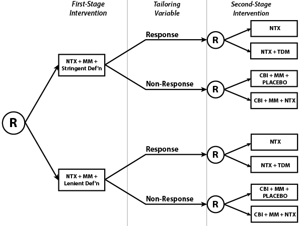

<!-- Modal -->
<div class="modal fade" id="exampleAmodal" tabindex="-1" data-width="760" aria-hidden="true">
  <div class="modal-dialog">
    <div class="modal-content">
      <div class="modal-header">
        <button type="button" class="close" data-dismiss="modal"><span aria-hidden="true">&times;</span></button>
        <h3 class="modal-title">Example of a SMART using Design I</h3>
      </div>
      <div class="modal-body">
		<p>
		We consider the <a href="http://clinicaltrials.gov/ct2/show/NCT00115037?term=oslin&rank=8">ExTENd trial</a> (D. Oslin, P.I.) for managing alcoholism
		in individuals who do not respond to <a href="https://en.wikipedia.org/wiki/Naltrexone">naltrexone</a>, an opioid receptor antagonist used for treatment
		of alcohol or opioid dependence. 
		</p>
		<h4>Motivation</h4>
			<p>
				Naltrexone has been shown to be efficacious, but is infrequently prescribed by clinicians, due to observed low adherence and unanswered questions
				regarding follow-up treatments for individuals who do not respond. The main questions ExTENd sought to address were:
				<ol>
					<li> What level of drinking behavior constitutes non-response?
					<li> What second-stage treatment would be useful for individuals who do not respond to naltrexone?
					<li> What treatment would be useful for relapse prevention among individuals who respond to naltrexone?
				</ol>
			</p>
		<h4> Trial Components </h4>
			<p>
				The treatments under study are
				<ol>
					<li> Strict definition of non-response (2 or more days of heavy drinking in first 8 weeks)
					<li> Lenient definition of non-response (5 or more days of heavy drinking in first 8 weeks)
					<li> Naltrexone (NTX)
					<li> Telephone Disease Management (TDM)
					<li> Combined Behavioral Intervention (CBI)
					<li> Medical Management (MM)
				</ol>
			</p>
			<p>
				In the first stage, individuals are randomized between a strict (2 or more heavy drinking days) and a lenient (5 or more heavy drinking days) definition
				of non-response. If this criterion is met, the individual is re-randomized to one of two rescue treatments; else, after 8 weeks, the participant is re-randomized
				to one of two "maintenance", or relapse-prevention, treatments. Here, the tailoring variable is self-reported number of heavy drinking days.
			</p>		
		<div>
			 </img>
		</div>
		<h4> Embdedded Adaptive Interventions </h4>
			There are eight adaptive interventions embedded in this design, as pictured above. They are
			<ol>
				<li> "Evaluate non-response under the strict definition. If the patient reports 2 or more days of heavy drinking in the first 8 weeks of treatment, switch
				to CBI, MM, and placebo. Otherwise, continue on NTX."
				<li> "Evaluate non-response under the strict definition. If the patient reports 2 or more days of heavy drinking in the first 8 weeks of treatment, switch
				to CBI, MM, and placebo. Otherwise, augment NTX with TDM."
				<li> ""Evaluate non-response under the strict definition. If the patient reports 2 or more days of heavy drinking in the first 8 weeks of treatment, augment
				NTX with CBI and MM. Otherwise, continue on NTX."
				<li> "Evaluate non-response under the strict definition. If the patient reports 2 or more days of heavy drinking in the first 8 weeks of treatment, augment
				NTX with CBI and MM. Otherwise, augment NTX with TDM."
				<li> "Evaluate non-response under the lenient definition. If the patient reports 5 or more days of heavy drinking in the first 8 weeks of treatment, switch
				to CBI, MM, and placebo. Otherwise, continue on NTX."
				<li> "Evaluate non-response under the lenient definition. If the patient reports 5 or more days of heavy drinking in the first 8 weeks of treatment, switch
				to CBI, MM, and placebo. Otherwise, augment NTX with TDM."
				<li> "Evaluate non-response under the lenient definition. If the patient reports 5 or more days of heavy drinking in the first 8 weeks of treatment, augment
				NTX with CBI and MM. Otherwise, continue on NTX."
				<li> "Evaluate non-response under the lenient definition. If the patient reports 5 or more days of heavy drinking in the first 8 weeks of treatment, augment
				NTX with CBI and MM. Otherwise, augment NTX with TDM."
			</ol>
		<h4>Outcome Measures</h4>
			<p>
				The primary outcome measures were percent of heavy drinking days and percent of drinking days over the last 8 weeks of the study. 
			</p>
		<h4>References</h4>
		<ol>
			<li> Lei, H., Nahum-Shani, I., Lynch, K., Oslin, D., and Murphy, S. A. (2012), "A 'SMART' Design for Building Individualized
				Treatment Sequences," <em>Annu. Rev. Clin. Psychol.</em>, 8, 21-48.
			<li> Murphy, S. A., Lynch, K. G., Oslin, D. W., McKay, J. R., & Ten Have, T. R. (2007), "Developing adaptive treatment 
				strategies in substance abuse research," <em>Drug Alcohol Dependence</em>, 88(2), S24-30. PMCID: PMC1922034
		</ol>
	  </div>
      <div class="modal-footer">
		<a type="button" class="btn btn-primary" href="pdf/exampleDesignA.pdf" target="_blank">Print</a>
        <button type="button" class="btn btn-default" data-dismiss="modal">Close</button>
      </div>
    </div>
  </div>
</div>
<!-- /.modal -->